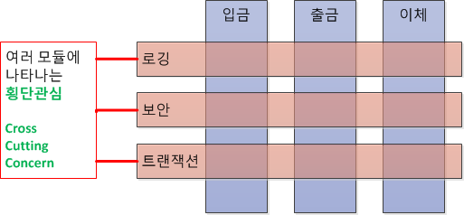

AOP (Aspect Oriented Programming : 관점 지향 프로그래밍)
어플리케이션 전체에 사용되는 기능을 재사용 하도록 지원 하도록 도와주는 것
관심의 분리 (Seperation of Concerns) 를 통하여 핵심 관심 사항 (입금, 출금, 이체) 에 집중 하는것이다.
기능을 핵식 비지니스 로직과 공통 모듈로 분리하고, 핵심 로직에 영향을 미치지 않고 사이사이에 공통 모듈을 효과적으로 잘 끼워 넣도록 코드밖에서 설정된다는 것이 핵심이다.
프로그램 파악이 힘들기 때문에 AOP 의 사용이 많을 경우에는 유지보수의 관리적인 측면이 어려움이 많다.

장점
- 중복되는 코드 제거
- 효율적인 유지보수
- 높은 생산성
- 재활용성 극대화
- 유연한 변화 수용